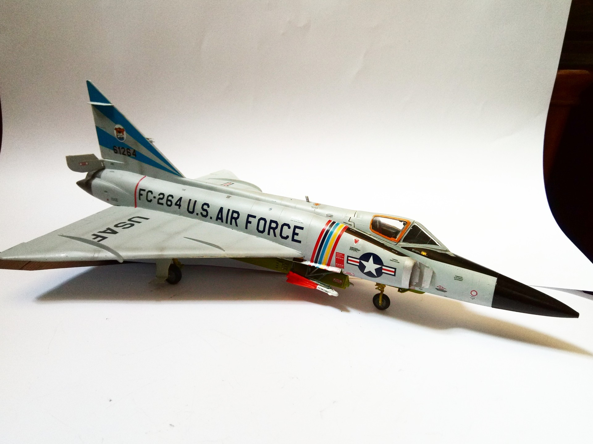

Aerei · scale model archive
Convair F-102A Delta Dagger
Convair F-102A Delta Dagger — Kit: Revell, Scale: 1/48. 525 FIS, 86 FG 56-1264/FC-264 (Lt.Col. Charles W. Carlson Jr.) September 1960 - Bitburg AB DE…

Photo gallery
English description
525 FIS, 86 FG 56-1264/FC-264 (Lt.Col. Charles W. Carlson Jr.) September 1960 - Bitburg AB DE unfortunately I missed the tail white underground
#1/48 #Revell #plasticmodel
Descrizione italiana
525 FIS, 86 FG 56-1264/FC-264 (Lt.Col. Charles W. Autolson Jr.) settembre 1960 - Bitburg AB DE unfortunately I missed il tail white underground.